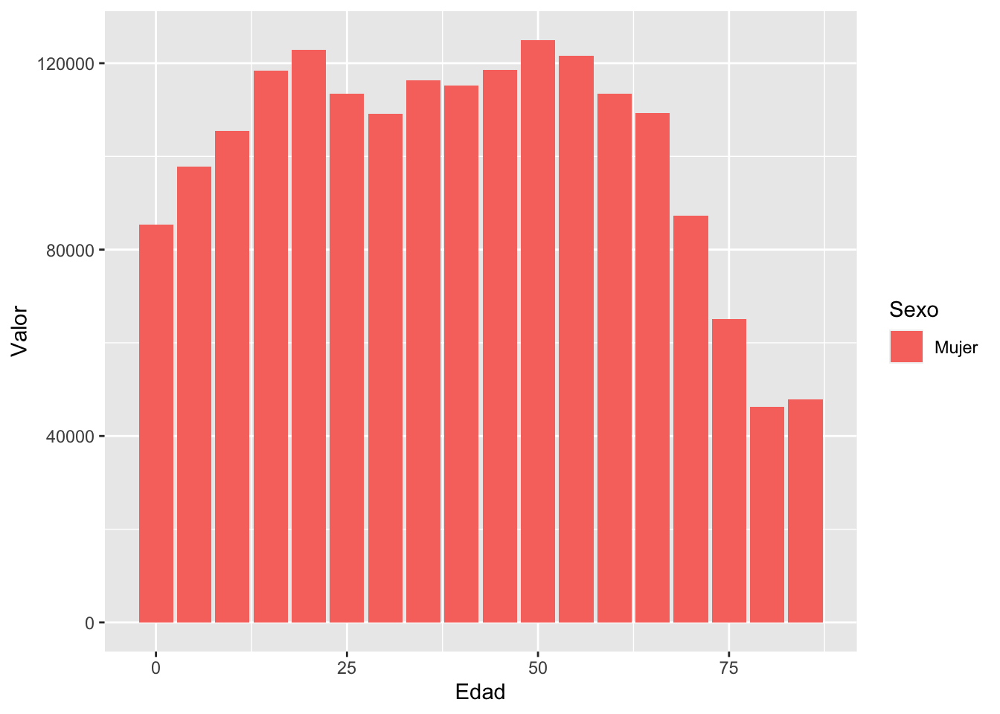
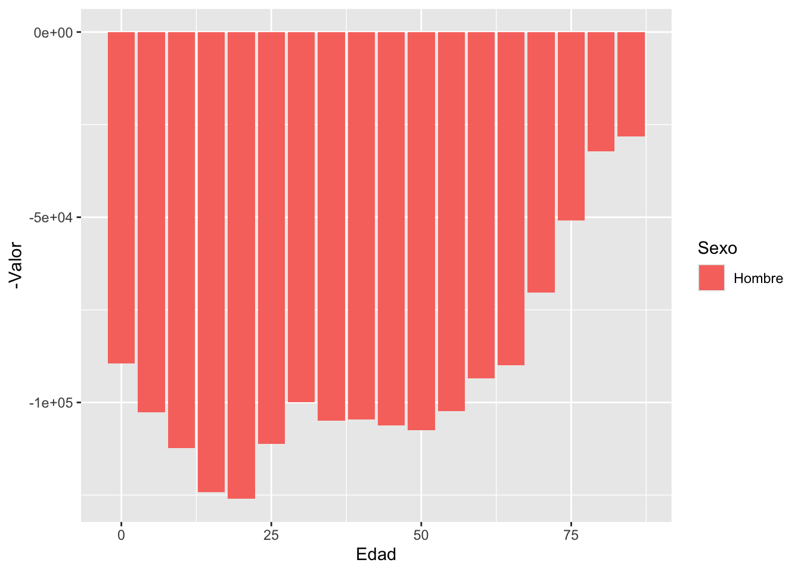
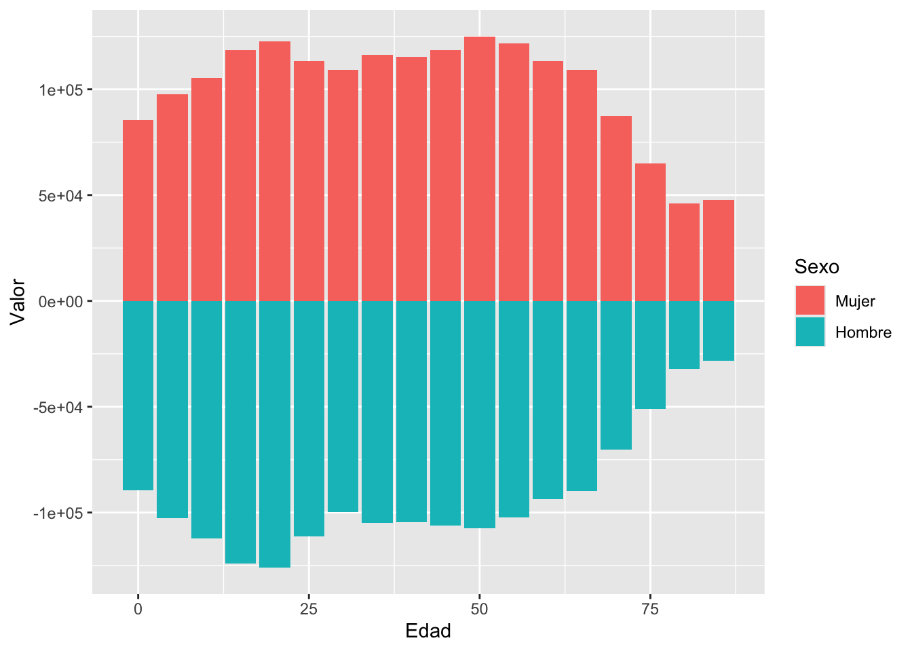
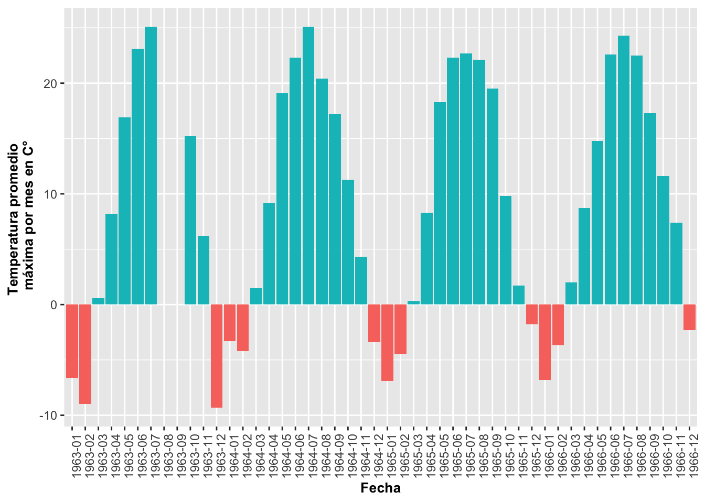
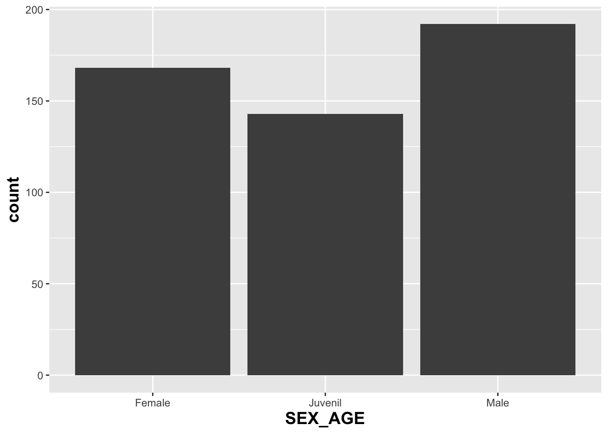
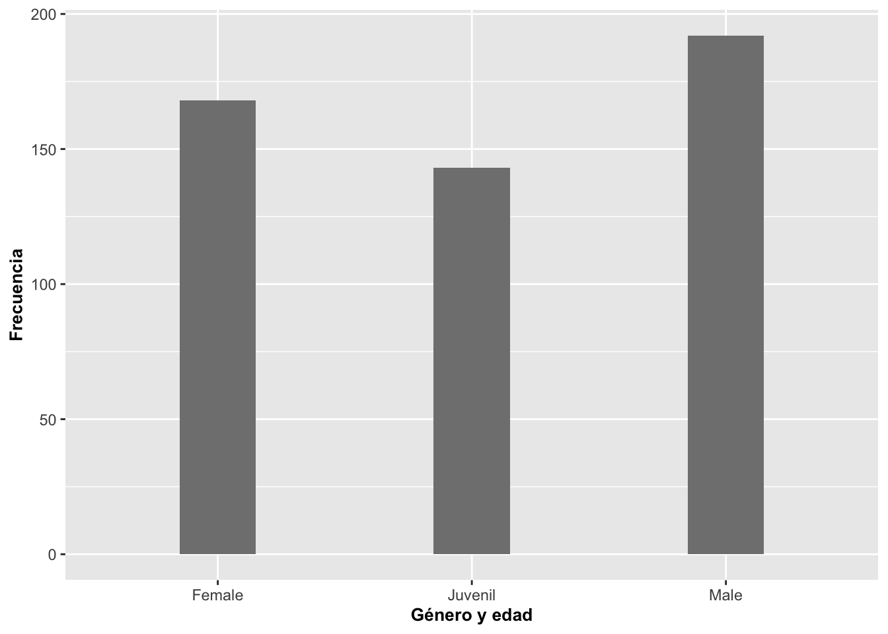
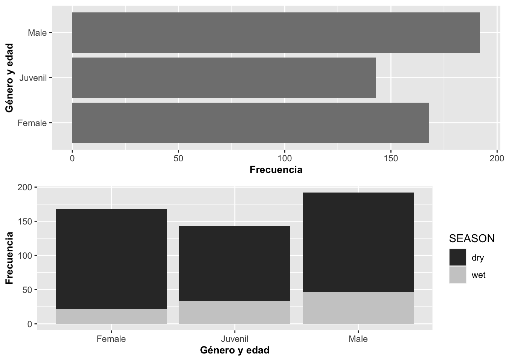
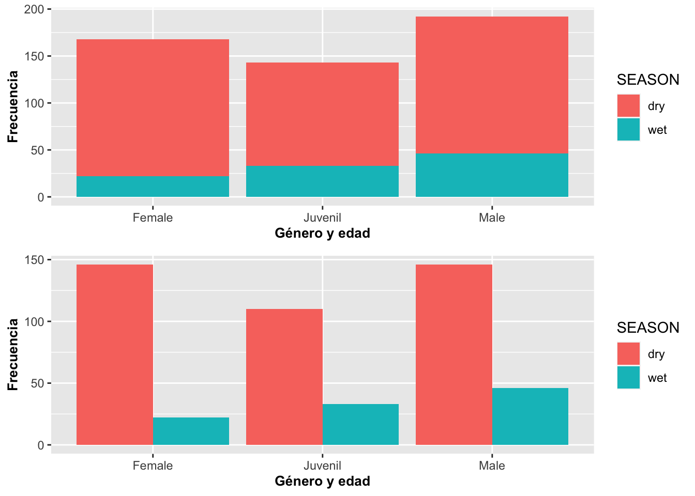

Gráficos Poblacional y Temperatura
Fecha de la ultima revisión
## [1] "2024-03-20"

#devtools::install_github("EvaMaeRey/flipbookr")
library(tidyverse)
library(ggversa)
library(janitor)
library(gridExtra) # paquete para organizar los gráficosPirámides poblacionales con geom_bar
Un ejemplo interesante de geom_bar es cuando creamos pirámides poblacionales. Para el próximo ejemplo utilizaremos datos del censo de la base de datos de la Oficina del Censo de los EE. UU. US Census del 2015 sobre la población de Puerto Rico. Los datos representan la cantidad de mujeres en azul y hombres en rojo en categorías de edad; o sea, de 0 a 4 años, de 5 a 9 años y así sucesivamente. La última categoría incluye todos los puertorriqueños de 85 años o más. Para producir este gráfico, se generarán dos geom_bar uno al lado del otro; uno con los datos de Mujer (derecha) y otro con los datos de Hombre (izquierda).
Para especificar que se usen solamente los datos de un subgrupo de cada variable, se hace de la misma manera que en R; o sea,
subset(Pop_PR,Pop_PR$Sexo=="Mujer") # el "==" es para indicar que tiene que cumplir con esta condición exclusivaTambién note que tenemos datos a la izquierda y a la derecha del valor de cero. Se produce este patrón usando {-Valor} en uno de los grupos, donde el valor es el tamaño poblacional por grupo de edad. Por último, se tiene que añadir coord_flip() para que las barras queden de forma horizontal.
## Sexo Valor Edad
## 1 Hombre 89507 0
## 2 Hombre 102622 5
## 3 Hombre 112350 10
## 4 Hombre 124179 15
## 5 Hombre 125971 20
## 6 Hombre 111167 25
## 7 Hombre 99855 30
## 8 Hombre 104890 35
## 9 Hombre 104593 40
## 10 Hombre 106235 45
## 11 Hombre 107561 50
## 12 Hombre 102377 55
## 13 Hombre 93510 60
## 14 Hombre 89880 65
## 15 Hombre 70294 70
## 16 Hombre 50879 75
## 17 Hombre 32160 80
## 18 Hombre 28118 85
## 19 Mujer 85368 0
## 20 Mujer 97790 5
## 21 Mujer 105397 10
## 22 Mujer 118389 15
## 23 Mujer 122821 20
## 24 Mujer 113504 25
## 25 Mujer 109102 30
## 26 Mujer 116325 35
## 27 Mujer 115224 40
## 28 Mujer 118525 45
## 29 Mujer 124980 50
## 30 Mujer 121569 55
## 31 Mujer 113409 60
## 32 Mujer 109224 65
## 33 Mujer 87289 70
## 34 Mujer 65082 75
## 35 Mujer 46233 80
## 36 Mujer 47803 85## Sexo Valor Edad
## 1 Hombre 89507 0
## 2 Hombre 102622 5
## 3 Hombre 112350 10
## 4 Hombre 124179 15
## 5 Hombre 125971 20## Sexo Valor Edad
## 33 Mujer 87289 70
## 34 Mujer 65082 75
## 35 Mujer 46233 80
## 36 Mujer 47803 85ggplot(data=Pop_PR) +
geom_bar(aes(Edad, Valor, group= Sexo, fill=Sexo),
stat = "identity",
subset(Pop_PR,Pop_PR$Sexo=="Mujer"))
ggplot(data=Pop_PR) +
geom_bar(aes(Edad,-Valor,group=Sexo,fill=Sexo), # nota el "negativo" antes de la
#variable "Valor", se le esta asignando un valor negativo a cada valor a los hombres.
stat = "identity",
subset(Pop_PR,Pop_PR$Sexo=="Hombre"))
Unir los dos graficos de barras
ggplot(data=Pop_PR) +
geom_bar(aes(Edad, Valor, group= Sexo, fill=Sexo),
stat = "identity",
subset(Pop_PR,Pop_PR$Sexo=="Mujer"))+
geom_bar(aes(Edad,-Valor,group=Sexo,fill=Sexo), # nota el "negativo" antes de la
#variable "Valor", se le esta asignando un valor negativo a cada valor a los hombres.
stat = "identity",
subset(Pop_PR,Pop_PR$Sexo=="Hombre"))
ggplot(data=Pop_PR) +
geom_bar(aes(Edad, Valor, group= Sexo, fill=Sexo),
stat = "identity",
subset(Pop_PR,Pop_PR$Sexo=="Mujer"))+
geom_bar(aes(Edad,-Valor,group=Sexo,fill=Sexo), # nota el "negativo" antes de la
#variable "Valor", se le esta asignando un valor negativo a cada valor a los hombres.
stat = "identity",
subset(Pop_PR,Pop_PR$Sexo=="Hombre"))+
scale_y_continuous(breaks=seq(-140000,140000,40000),
labels=abs(seq(-140000,140000,40000)))+
coord_flip()+
ylab("Tamaño poblacional")+
theme(axis.title=element_text(size=10,face="bold"))+
scale_fill_manual(values = c("green", "#36211D"))+
scale_color_manual(values = c("green", "#36211D"))
#Population Pyramid de PR, del censo 2015.
# ggsave("Graficos/Piramide_PR_censo2015.png")
Pop_PR$SexoNum=as.numeric(Pop_PR$Sexo)
head(Pop_PR)## Sexo Valor Edad SexoNum
## 1 Hombre 89507 0 1
## 2 Hombre 102622 5 1
## 3 Hombre 112350 10 1
## 4 Hombre 124179 15 1
## 5 Hombre 125971 20 1
## 6 Hombre 111167 25 1Si no se le añade coord_flip(), el gráfico quedará representado con las barras de forma vertical (o en columnas).
## [1] Hombre Mujer
## Levels: Hombre Mujerggplot(data=Pop_PR) +
geom_bar(aes(Edad,Valor,group=Sexo,fill=Sexo),
stat = "identity",
subset(Pop_PR,Pop_PR$Sexo=="Mujer"))+
geom_bar(aes(Edad,-Valor,group=Sexo,fill=Sexo),
stat = "identity",
subset(Pop_PR,Pop_PR$Sexo=="Hombre")) +
scale_y_continuous(breaks=seq(-140000,140000,40000),
labels=abs(seq(-140000,140000,40000))) +
ylab("Tamaño poblacional")+
theme(axis.title=element_text(size=10,face="bold"))
TAREA:
Seleccione el archivo “DominicanRepublic,csv” que se encuentra en la pestaña “Los datos”. Estos datos provienen las naciones unidas del siguiente enlace PoblacionEdad_genero, los datos fueron pre-selecionado a incluir solamente los datos la isla de la Republica Dominicana y no todos los países del mundo. Seleccione la variable solamente el país de “Dominican Republican”, mujeres y hombres, para el año de 2010, y el área solamente la población del campo. Que representa la cantidad de personas con esta edad en el muestreo censal del año 2013.
– paso 1
subir los datos
– paso 2
seleccionar las columnas y variables de interes
– paso 3
Producir una piramide de la poblacion de la Republica Dominicana
– Mire el nombre de las columnas primero y como esta organiado
- Cambie de color las barras
- Cambie el nombre de los nombres de los ejes
- Salva el gráfico con extensión de .png
- Sube el gráfico a Edmodo
Patrones de temperatura en tiempo con geom_bar
Este tipo de representación puede ser efectiva para mostrar patrones en donde los valores son negativos y positivos; por ejemplo, la temperatura. Para demostrarlo, ahora daremos un ejemplo que proviene del pueblo de Asbestos, Quebec, Canadá. Los datos fueron extraídos de la base de datos de http://climate.weather.gc.ca/historical_data/search_historic_data_e.html (identifier 7020360). El archivo de datos contiene la temperatura promedio (por mes) de la máxima y la mínima del 1948 al 1987. Seleccionaremos solamente un conjunto limitado de los datos del año 1963 al 1968. Además, tendremos que voltear la información alrededor del eje de X para que se pueda leer, tal como se demuestra en la Figura. El primer paso es identificar que la variable Fecha es de tipo dato secuencial fecha y tiempo. El segundo paso es identificar si los valores de temperatura máxima están por debajo o por encima del punto de congelación, < 0C°, o > 0C°, creando una nueva columna que aquí llamamos NegPos. El tercer paso es usar solamente un subgrupo de información del archivo para mejorar la representación, ya que este tiene datos del 1948 al 1987. Se seleccionan los años 1963 al 1966.
Primero miramos los datos
## [1] "Year" "Mes" "Temp_Prom_Max" "Temp_Prom_Min"
## [5] "Fecha" "day1" "fecha" "diaanual"## Year Mes Temp_Prom_Max Temp_Prom_Min Fecha day1 fecha diaanual
## 1 1948 6 22.2 9.9 1948-06 1 1948-06-01 153
## 2 1948 7 25.5 14.2 1948-07 1 1948-07-01 183
## 3 1948 8 24.9 14.2 1948-08 1 1948-08-01 214
## 4 1948 9 21.6 8.4 1948-09 1 1948-09-01 245
## 5 1948 10 12.0 2.6 1948-10 1 1948-10-01 275
## 6 1948 11 10.3 1.9 1948-11 1 1948-11-01 306## [1] TRUE## year mes temp_prom_max temp_prom_min fecha day1 fecha_2 diaanual
## 1 1948 6 22.2 9.9 1948-06 1 1948-06-01 153
## 2 1948 7 25.5 14.2 1948-07 1 1948-07-01 183
## 3 1948 8 24.9 14.2 1948-08 1 1948-08-01 214
## 4 1948 9 21.6 8.4 1948-09 1 1948-09-01 245
## 5 1948 10 12.0 2.6 1948-10 1 1948-10-01 275
## 6 1948 11 10.3 1.9 1948-11 1 1948-11-01 306Identificar que la variable “Fecha” es una variable de tiempo. Habrá un modulo para discutir solamente de fechas y horas.
# Identificar que la variable "Fecha" es una variable de tiempo.
#names(ASBESTOS_QUEBEC)[names(ASBESTOS_QUEBEC) == 'Date.Time'] <- 'Fecha'
library(lubridate)
ASBESTOS_QUEBEC$date=ym(ASBESTOS_QUEBEC$fecha)
head(ASBESTOS_QUEBEC, n=4)## year mes temp_prom_max temp_prom_min fecha day1 fecha_2 diaanual
## 1 1948 6 22.2 9.9 1948-06 1 1948-06-01 153
## 2 1948 7 25.5 14.2 1948-07 1 1948-07-01 183
## 3 1948 8 24.9 14.2 1948-08 1 1948-08-01 214
## 4 1948 9 21.6 8.4 1948-09 1 1948-09-01 245
## date
## 1 1948-06-01
## 2 1948-07-01
## 3 1948-08-01
## 4 1948-09-01Crear la nueva variable Temp_Prom_Max;
Aquí se crea una nueva columna con para identificar si los datos son positivos o negativos, si es positiva = “TRUE”, si es negativa = “FALSE”.
Identificar si las temperatura es por debajo o por encima de 0 celcius
ASBESTOS_QUEBEC$negpos = ASBESTOS_QUEBEC$temp_prom_max>=0 # identificar que si una teperatura es debajo zero o no
head(ASBESTOS_QUEBEC)## year mes temp_prom_max temp_prom_min fecha day1 fecha_2 diaanual
## 1 1948 6 22.2 9.9 1948-06 1 1948-06-01 153
## 2 1948 7 25.5 14.2 1948-07 1 1948-07-01 183
## 3 1948 8 24.9 14.2 1948-08 1 1948-08-01 214
## 4 1948 9 21.6 8.4 1948-09 1 1948-09-01 245
## 5 1948 10 12.0 2.6 1948-10 1 1948-10-01 275
## 6 1948 11 10.3 1.9 1948-11 1 1948-11-01 306
## date negpos
## 1 1948-06-01 TRUE
## 2 1948-07-01 TRUE
## 3 1948-08-01 TRUE
## 4 1948-09-01 TRUE
## 5 1948-10-01 TRUE
## 6 1948-11-01 TRUESelecionar solamente un subgrupo de los datos
library(tidyverse)
#ggplot(data=ASBESTOS_QUEBEC)+
# aes(x=Fecha, y=temp_prom_max) +
#geom_bar(stat = "identity", position="identity")
ASBESTOSsub=subset(ASBESTOS_QUEBEC, year>1962 & year<1967) # 1963 al 1966
head(ASBESTOSsub)## year mes temp_prom_max temp_prom_min fecha day1 fecha_2 diaanual
## 176 1963 1 -6.6 -12.7 1963-01 1 1963-01-01 1
## 177 1963 2 -9.0 -16.7 1963-02 1 1963-02-01 32
## 178 1963 3 0.6 -8.8 1963-03 1 1963-03-01 60
## 179 1963 4 8.2 -0.9 1963-04 1 1963-04-01 91
## 180 1963 5 16.9 5.7 1963-05 1 1963-05-01 121
## 181 1963 6 23.1 12.3 1963-06 1 1963-06-01 152
## date negpos
## 176 1963-01-01 FALSE
## 177 1963-02-01 FALSE
## 178 1963-03-01 TRUE
## 179 1963-04-01 TRUE
## 180 1963-05-01 TRUE
## 181 1963-06-01 TRUEUniendo las partes para crear el gráfico
ggplot(data=ASBESTOSsub,
aes(x=fecha, y=temp_prom_max, fill=negpos)) +
geom_bar(stat = "identity", position="identity")+
theme(axis.text.x=element_text(angle=90))+
guides(fill=FALSE)+
xlab("Fecha")+
ylab("Temperatura promedio \n máxima por mes en C°")+
theme(axis.title=element_text(size=10,face="bold"))## Warning: Removed 2 rows containing missing values or values outside the scale
## range (`geom_bar()`).
Tarea #2
- Usando los datos de Anchorage, Alaska que se encuentra en la sección de datos aqui Anchorage_Data, evaluar el patrón de temperatura mínima en los diferentes meses del año. Convertir los datos de Farenheit a Celcius.
## Rows: 20 Columns: 13
## ── Column specification ───────────────────────────────────────────────
## Delimiter: ","
## dbl (13): Year, Jan, Feb, Mar, Apr, May, Jun, Jul, Aug, Sep, Oct, Nov, Dec
##
## ℹ Use `spec()` to retrieve the full column specification for this data.
## ℹ Specify the column types or set `show_col_types = FALSE` to quiet this message.| Year | Jan | Feb | Mar | Apr | May | Jun | Jul | Aug | Sep | Oct | Nov | Dec |
|---|---|---|---|---|---|---|---|---|---|---|---|---|
| 2000 | -10 | 7 | 11 | 20 | 30 | 37 | 44 | 36 | 27 | 16 | 13 | 4 |
| 2001 | 8 | 2 | 12 | 12 | 24 | 42 | 48 | 45 | 33 | 2 | 0 | -15 |
| 2002 | -11 | -5 | 0 | 6 | 27 | 37 | 47 | 43 | 32 | 26 | 20 | -2 |
| 2003 | 0 | 13 | -1 | 16 | 33 | 42 | 47 | 45 | 28 | 22 | -8 | -14 |
| 2004 | -18 | 1 | -1 | 1 | 27 | 38 | 48 | 46 | 27 | 20 | 0 | 0 |
| 2005 | -7 | -8 | 16 | 20 | 33 | 38 | 50 | 42 | 39 | 16 | -5 | -1 |
# gather the data in columns
# Paso 1
AA<-gather(Anchorage_ALASKA,
key= "Mes",
value="Temp_min_F",
-Year)
head(AA) ## # A tibble: 6 × 3
## Year Mes Temp_min_F
## <dbl> <chr> <dbl>
## 1 2000 Jan -10
## 2 2001 Jan 8
## 3 2002 Jan -11
## 4 2003 Jan 0
## 5 2004 Jan -18
## 6 2005 Jan -7# Identificar que el Año y Mes son variables de tiempo
#Paso 2
numMonth<-function(x)
c(jan=1,feb=2,mar=3,apr=4,may=5,jun=6,jul=7,aug=8,sep=9,oct=10,nov=11,dec=12)[tolower(x)]
AA$Fecha=numMonth(AA$Mes)
tail(AA)## # A tibble: 6 × 4
## Year Mes Temp_min_F Fecha
## <dbl> <chr> <dbl> <dbl>
## 1 2014 Dec 13 12
## 2 2015 Dec 4 12
## 3 2016 Dec -8 12
## 4 2017 Dec 5 12
## 5 2018 Dec 10 12
## 6 2019 Dec -2 12##
## Attaching package: 'zoo'## The following objects are masked from 'package:data.table':
##
## yearmon, yearqtr## The following objects are masked from 'package:base':
##
## as.Date, as.Date.numeric## # A tibble: 6 × 5
## Year Mes Temp_min_F Fecha FechasMA
## <dbl> <chr> <dbl> <dbl> <yearmon>
## 1 2000 Jan -10 1 Jan 2000
## 2 2001 Jan 8 1 Jan 2001
## 3 2002 Jan -11 1 Jan 2002
## 4 2003 Jan 0 1 Jan 2003
## 5 2004 Jan -18 1 Jan 2004
## 6 2005 Jan -7 1 Jan 2005Conversión de temperatura
Cual el punto de congelación en Farenheit?
Como se convierte F° en C°
## # A tibble: 6 × 6
## Year Mes Temp_min_F Fecha FechasMA NegPos
## <dbl> <chr> <dbl> <dbl> <yearmon> <lgl>
## 1 2000 Jan -10 1 Jan 2000 FALSE
## 2 2001 Jan 8 1 Jan 2001 FALSE
## 3 2002 Jan -11 1 Jan 2002 FALSE
## 4 2003 Jan 0 1 Jan 2003 FALSE
## 5 2004 Jan -18 1 Jan 2004 FALSE
## 6 2005 Jan -7 1 Jan 2005 FALSE## # A tibble: 6 × 7
## Year Mes Temp_min_F Fecha FechasMA NegPos Temp_C
## <dbl> <chr> <dbl> <dbl> <yearmon> <lgl> <dbl>
## 1 2000 Jan -10 1 Jan 2000 FALSE -23.3
## 2 2001 Jan 8 1 Jan 2001 FALSE -13.3
## 3 2002 Jan -11 1 Jan 2002 FALSE -23.9
## 4 2003 Jan 0 1 Jan 2003 FALSE -17.8
## 5 2004 Jan -18 1 Jan 2004 FALSE -27.8
## 6 2005 Jan -7 1 Jan 2005 FALSE -21.7ggplot(data=AA,
aes(x=FechasMA, y=Temp_C, fill=NegPosC)) +
geom_bar(stat = "identity", position="identity")+
theme(axis.text.x=element_text(angle=90))+
guides(fill=FALSE)+
xlab("Fecha")+
ylab("Temperatura promedio máxima por mes en Celsius")+
theme(axis.title=element_text(size=10,face="bold"))## Warning: The `trans` argument of `continuous_scale()` is deprecated as of
## ggplot2 3.5.0.
## ℹ Please use the `transform` argument instead.
## This warning is displayed once every 8 hours.
## Call `lifecycle::last_lifecycle_warnings()` to see where this warning
## was generated.
Gráfico de barras: Ajuste de posiciones con geom_bar
A veces queremos hacer que las barras luzcan de diferentes maneras; por ejemplo, que las posiciones de las barras no salgan verticales o tan gruesas. Además, se puede modificar la representación de las barras para que la altura de ellas no represente el número de observaciones; por ejemplo, que represente una suma sobre otra variable.
Los datos que utilizaremos para la próxima demostración provienen del archivo de lagartos Anolis que contiene información sobre su edad, sexo, periodo de muestreo y localidad donde fueron muestreados.
## [1] "STUDY" "Survey_Site"
## [3] "LOCATION" "TIME"
## [5] "DATE" "SEASON"
## [7] "SPECIES" "SEX_AGE"
## [9] "HEIGHT" "DISTANCE_FROM_CENTERLINE"
## [11] "PERCH_SUBSTRATE" "PERCH_DIAMETER"
## [13] "WEIGHT" "SVL"
## [15] "TAIL"El primer gráfico a continuación, produce por omisión barras negras que representan la suma de la cantidad de observaciones.
barraA=ggplot(Anolis, aes(SEX_AGE))
barraA+geom_bar(fill=grey(.3))+
theme(axis.title=element_text(size=14,face="bold"))
En el segundo, el ancho de las barras fue reducido para que se vean menos angostas usando la opción width, ene ejemplo se reduce el ancho de las barras width=.3. Además, se cambia la descripción de los ejes al castellano. También selecciono un otro color de gris y se modifico su intensidad con fill=grey(.5).
barraA=ggplot(Anolis, aes(SEX_AGE))
barraA+geom_bar(width=.3, fill=grey(.5))+
labs(y="Frecuencia", x="Género y edad")+
theme(axis.title=element_text(size=10,face="bold"))
En el tercer grafico las barras fueron rotadas usando la opción coord_flip() y puestas sobre lo que antes era el eje de Y. En el cuarto, se añadió una variable discreta como color; en este caso, fue usada la escala de color gris para distinguir entre la temporada seca dry la lluviosa wet. Si no se añade la opción scale_fill_grey(), las categorías tendrían color.
barraA=ggplot(Anolis, aes(SEX_AGE))
B3=barraA+geom_bar(fill=grey(.5))+coord_flip()+
labs(y="Frecuencia", x="Género y edad")+
theme(axis.title=element_text(size=10,face="bold"))
barraA=ggplot(Anolis, aes(SEX_AGE, fill=SEASON))
B4=barraA+geom_bar()+scale_fill_grey()+
labs(y="Frecuencia", x="Género y edad")+
theme(axis.title=element_text(size=10,face="bold"))
grid.arrange(B3,B4,ncol=1)
Posiciones de las barras
Si uno quiere posicionar las categorías una al lado de la otra, se usa (position={dodge}). El parámetro dodge le indica esquivar en el sentido de mover al lado.
barraA=ggplot(Anolis, aes(SEX_AGE,fill=SEASON))
B1=barraA+geom_bar()+
labs(y="Frecuencia", x="Género y edad")+
theme(axis.title=element_text(size=10,face="bold"))
barraA=ggplot(Anolis, aes(SEX_AGE,fill=SEASON))
B2=barraA+geom_bar(position="dodge")+
labs(y="Frecuencia", x="Género y edad")+
theme(axis.title=element_text(size=10,face="bold"))
grid.arrange(B1,B2,ncol=1)
Opciones y Parametros de geom_bar:
- ggplot(el archivo de datos, aes(la variable continua))
- geom_bar(stat=bin, x, y, alpha, color, fill, linetype, size)
- alpha: la intensidad del color
- fill: el color de la barra
- color: el color de la línea alrededor de la barra
- linetype: representa el estilo de línea
- size: representa el grosor de la línea
- weight; para modificar el valor original; entonces no sería, por ejemplo, el conteo/suma de los valores si no un valor ponderado (promedio ponderado).